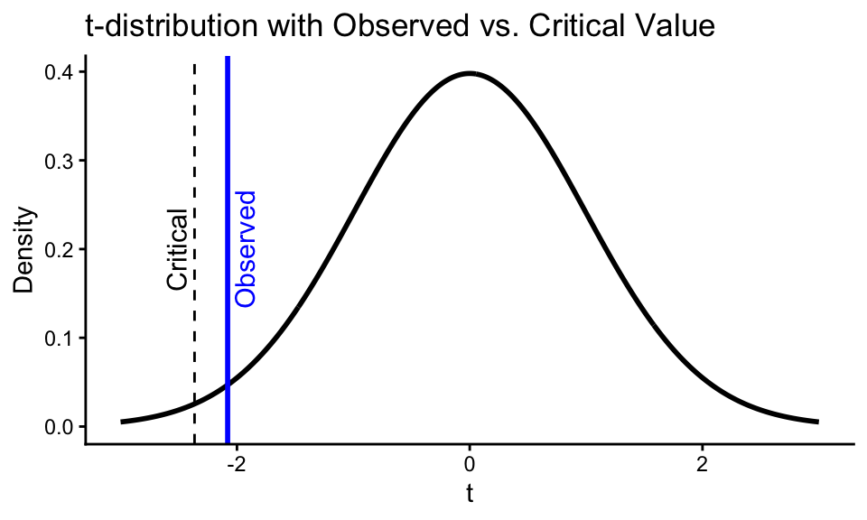
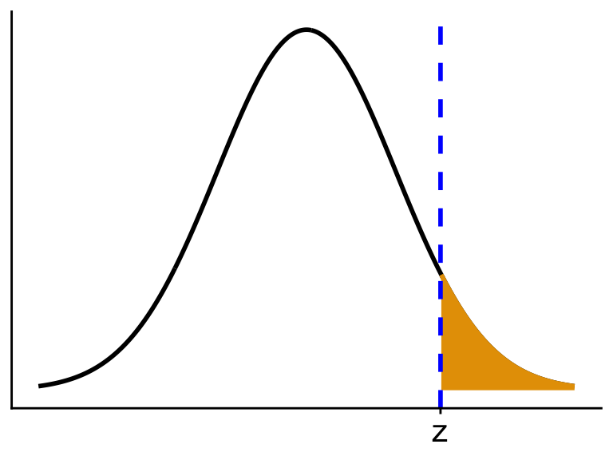
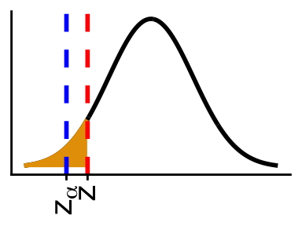
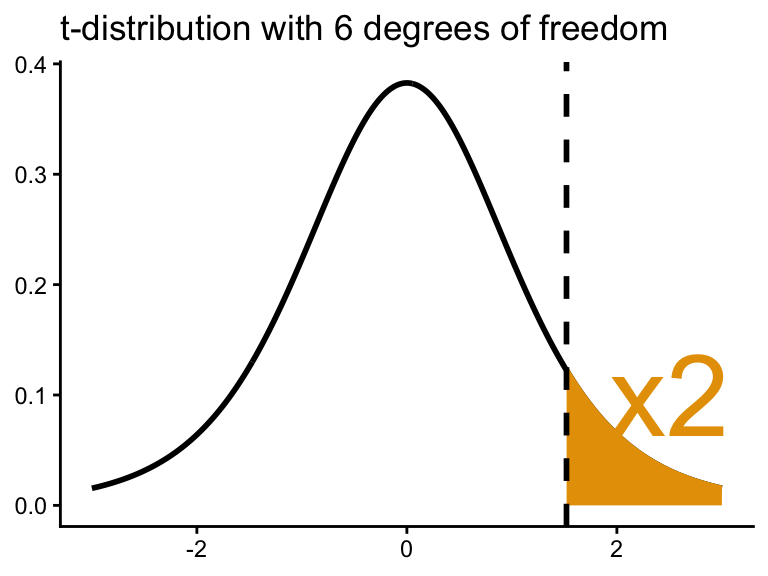

Chapter 7: One Sample Hypothesis Testing
Hypothesis Testing Overview
- Two hypotheses
- \(H_0\): Null
- Baseline, to be disproved
- Baseline, to be disproved
- \(H_1\): Alternative
- Opposite of null (contradicts \(H_0\))
- \(H_0\): Null
- Example: Want to test if low socioeconomic status (SES) mothers have babies with lower birthweight
- Know: national average is 120 oz
- For \(n = 10\) low SES mothers, observe
- \(\bar{X} = 115\) oz, \(S = 24\) oz
- \(\bar{X} = 115\) oz, \(S = 24\) oz
- Let \(\mu\) = average birthweight of low SES mothers
- \(H_0\): \(\mu = 120\)
- \(H_1\): \(\mu < 120\)
- \(H_0\): \(\mu = 120\)
- Know: national average is 120 oz
- We use data (e.g., \(\bar{X}\) and \(s^2\)) to make a decision (\(H_0\) vs. \(H_1\))
\[ \begin{array}{c|cc} & H_0 \text{ true} & H_1 \text{ true} \\ \hline \text{Fail to Reject } H_0 & \text{True negative} & \text{Type II error} \\ \text{Reject } H_0 & \text{Type I error} & \text{True positive} \\ \end{array} \]
Example: If the truth is \(\mu = 120\) (\(H_0\) is true) but we say \(\mu < 120\) (reject \(H_0\)), this is a Type I error
Typically,
- Null Hypothesis: parameter = some value
- Alternative Hypothesis: One of:
- parameter ≠ value,
- parameter > value,
- parameter < value,
- Null Hypothesis: parameter = some value
TipType I error rate
Probability of a Type I error \[\begin{align*} \Pr(\text{Reject } H_0 \mid H_0 \text{ True}) &= \text{significance level} \\ &= \alpha \end{align*}\]
TipType II error rate
Probability of a Type II error
\[\begin{align*}
\Pr(\text{Fail to reject } H_0 \mid H_1 \text{ True}) &= \beta
\end{align*}\]
TipPower
Probability of correctly rejecting the null. \[\begin{align*} \Pr(\text{Reject } H_0 \mid H_1 \text{ True}) &= 1 - \Pr(\text{Fail to reject } H_0 \mid H_1 \text{ True}) \\ &= 1 - \beta \end{align*}\]
- These probabilities are all in terms of repeated samples.
There is a new pain relief drug for osteoarthritis (OA).
- 50 OA patients take drug; measure \(X\) = % decline in pain level.
- Reported:
- If \(X > 0\): less pain
- If \(X < 0\): more pain
- We want to test if the drug is effective (average \(X > 0\))
- What hypotheses are being tested?
- What do Type I error, Type II error, and power mean?
- Let \(\mu\) = mean % decline in pain
- \(H_0\): \(\mu = 0\)
- \(H_1\): \(\mu > 0\)
- Type I: Say drug reduces pain on average, but it does not
- Type II: Say drug does not reduce pain when it does
- Power: Probability we say it works when it truly works
The goal of a good test is to make both \(\alpha\) and \(\beta\) as small as possible
However, typically, as \(\alpha \downarrow\), \(\beta \uparrow\) and as \(\beta \downarrow\), \(\alpha \uparrow\).
- These are conflicting criteria
Common strategy: Fix \(\alpha = 0.05\) (or similar), and use a test that has small \(\beta\)
All hypothesis testing asks: How weird is our data if \(H_0\) were true?

If data are very weird, reject \(H_0\)
If data are not very weird, fail to reject \(H_0\)
Hypothesis Testing for the Mean
Back to our example:
Let \(X_1, X_2, \ldots, X_n \overset{\text{iid}}{\sim} N(\mu, \sigma^2)\)- \(H_0\): \(\mu = \mu_0\)
- \(H_1\): \(\mu < \mu_0\)
- \(H_0\): \(\mu = \mu_0\)
This is a one-sided test because the alternative is of the form \(>\) or \(<\)
(as opposed to \(\mu \ne \mu_0\))Idea: Use the \(t\)-statistic as a measure of weirdness \[ t = \frac{\bar{X} - \mu_0}{s / \sqrt{n}} \]
If \(\mu = \mu_0\), then \(t\) should be close to 0, since \(\bar{X}\) will be close to \(\mu_0\)
In fact, under \(H_0\) (that is, only when \(H_0\) is true): \[ t \sim t_{n-1} \]
So compare \(t\) to a \(t_{n-1}\) distribution
- Reject \(H_0\) if \(t < a\) (some critical value)
- Since this provides evidence for \(H_1\)
- Reject \(H_0\) if \(t < a\) (some critical value)
We want to fix Type I error at level \(\alpha\): \[ \Pr(t < a) = \alpha \]
So choose \(a = t_{n-1,\alpha} =\)
qt(alpha, n-1)
ImportantOne-sided Test for Mean, Alternative Less
\(H_0\): \(\mu = \mu_0\)
\(H_1\): \(\mu < \mu_0\)
given \(\alpha\) (significance level)
Let
\[
t = \frac{\bar{X} - \mu_0}{s / \sqrt{n}}
\]
Reject \(H_0\) if
\[
t < \texttt{qt}(\alpha, n-1)
\]
Fail to reject if
\[
t \ge \texttt{qt}(\alpha, n-1)
\]
The \(p\)-value is \[ \texttt{pt}(t,n-1) \]
TipTest Statistic
A test statistic is a statistic which measures strength of evidence against \(H_0\)
- For example, the test statistic we used for \(H_0: \mu = \mu_0\) is
\[ t = \frac{\bar{X} - \mu_0}{s / \sqrt{n}} \]
TipCritical Value
A critical value is the value beyond which we reject \(H_0\).
- For example, the critical value we used in our mean test was \(\texttt{qt}(\alpha, n-1)\)
TipRejection Region
Rejection region: values of data for which we reject \(H_0\)
TipAcceptance Region
Acceptance region: values of data for which we accept \(H_0\)
Example: Let’s choose \(\alpha = 0.01\) and run the test for the birthweight example \[\begin{align*} H_0\!:\ &\mu = 120 \\ H_1\!:\ &\mu < 120 \\ \end{align*}\] We observe: \[ \bar{X} = 115,\quad s = 24,\quad n = 100 \] Our test statistic is \[ t = \frac{115 - 120}{24/\sqrt{100}} = -2.08 \\ \] We compare that to the critical value, which is the 0.01 quantile of the \(t\) distribution with 99 degrees of freedom.
qt(p = 0.01, df = 99)[1] -2.365Since \(-2.08 > -2.36\), the data are not weird (at the 0.01 level), so we fail to reject \(H_0\).

Note: When presenting results, don’t use the word “weird”. Say instead
We fail to reject the null that mean birthweights are 120 oz at significance level 0.01.
Tipp-value
The smallest \(\alpha\) at which we would reject \(H_0\)
Equivalently, the probability we would see data as extreme or more extreme than what we saw.
In the one-sided hypothesis test case, the \(p\)-value is the probability of being to the left of the observed value.
pt(-2.08, 99) # Left-tailed p-value[1] 0.02005
Important
\[ \text{p-value} < \alpha \iff t < t_{n-1,\alpha} \]
That is, we can reject either if the \(p\)-value is less than \(\alpha\) or if the \(t\)-statistic is less than the critical value.
Typically folks only report \(p\)-values and not the \(t\)-statistics.
- Mean infarct size (size of dead tissue in heart) is 25 (ck-g-Q/m²)
- 8 patients treated with drug have average infarct size of 16 with SD = 10
- Is drug effective in reducing infarct size?
- Run a hypothesis test.
Our two hypotheses are
- \(H_0: \mu = 25\)
- \(H_1: \mu < 25\)
We calculate the \(t\)-statistic to be \[ t = \frac{16 - 25}{10/\sqrt{8}} = -2.55 \] Our \(p\)-value is
pt(q = -2.55, df = 7)[1] 0.01905We have significant results at the 0.05 level.
Guidelines for \(p\)-value interpretation:
Range Interpretation \(0.05 \le p\) not significant \(0.01 \le p < 0.05\) significant \(0.001 \le p < 0.01\) highly significant \(p < 0.001\) very highly significant Those interpretations are not dogma. Use them as rules of thumb. E.g. 0.051 is no different (practically speaking) than 0.049.
Or you can use the XKCD joke interpretations:

Important
The \(p\)-value tells you strength of evidence that there is an effect
It tells you nothing about the size of the effect
Large sample size + tiny effect \(\Rightarrow\) still small \(p\)-value
Example: \[\begin{align*} n &= 10{,}000 \\ \bar{X} &= 119 \\ s &= 24 \\ t &= \frac{119 - 120}{24 / \sqrt{10{,}000}} = -4.17 \\ \end{align*}\] So the \(p\)-value is
pt(-4.17, 9999)[1] 1.536e-05- \(\Rightarrow\) Very sure \(\mu < 120\), but 119 is such a tiny difference from 120
- \(\Rightarrow\) statistically significant, not practically significant
ImportantOne-sided Test for Mean, Alternative Greater
If \(X_1, X_2, \ldots, X_n \overset{\text{iid}}{\sim} N(\mu, \sigma^2)\)
Hypotheses:
- \(H_0\): \(\mu = \mu_0\)
- \(H_1\): \(\mu > \mu_0\)
Test statistic:
\[
t = \frac{\bar{X} - \mu_0}{s / \sqrt{n}}
\]
The \(p\)-value is the probability under \(H_0\) of being greater than \(t\)
\[
\text{p-value} = 1 - \texttt{pt}(t,\ n-1)
\]
The critical value is the \(1-\alpha\) quantile of the \(t_{n-1}\) distribution. \[ \texttt{qt}(1 - \alpha, n-1) \] Reject for \(t\) larger than the critical value.
Mean cholesterol in the population is 175 mg/dL.
We have a sample 10 children of fathers who died from heart disease
We observe \(\bar{X} = 200\), \(s = 50\)
Is there evidence that these children have higher cholesterol?
Our two hypotheses are
- \(H_0 : \mu = 175\)
- \(H_1 : \mu > 175\)
We calculate our test statistic: \[ t = \frac{200 - 175}{50 / \sqrt{10}} = 1.58 \\ \]
Our \(p\)-value is then
1 - pt(1.58, 9)[1] 0.07428Therefore, we have weak evidence that they have higher cholesterol.
Two-sided Tests for the Mean
SometimesUsually, our alternative is just that the mean is not equal to the null value.- E.g., average birthweights for low SES families are different from the population average.
What constitutes “more weird” in this case is the area in both tails.

ImportantTwo-tailed Test
Let \(X_1, X_2, \ldots, X_n \overset{\text{iid}}{\sim} N(\mu, \sigma^2)\)
Hypotheses:
- \(H_0\): \(\mu = \mu_0\)
- \(H_1\): \(\mu \ne \mu_0\)
Test statistic:
\[
t = \frac{\bar{X} - \mu_0}{s / \sqrt{n}}
\]
Two-tailed p-value:
\[
\text{p-value} = 2 \cdot \texttt{pt}(-|t|,\ n-1)
\]
Critical value technique: Reject \(H_0\) if
\[
|t| > \texttt{qt}\left(1 - \frac{\alpha}{2},\ n-1\right)
\]
Cholesterol levels of US women are 190 mg/dL on average.
Want to compare cholesterol levels of recent Asian immigrants.
100 female Asian immigrants:
- \(\bar{X} = 181.52\) mg/dL
- \(s = 40\) mg/dL
\[\begin{align*} H_0 &: \mu = 190 \\ H_1 &: \mu \ne 190 \\ t &= \frac{181.52 - 190}{40 / \sqrt{100}} = -2.12 \\ \text{p-value} &= 2 \cdot pt(-2.12,\ 99) \approx 0.037 \end{align*}\]
- Use two-sided tests by default, unless only one direction is clearly of interest
- e.g., drug efficacy
- Because this is an introductory class, there will be a lot of one-sided tests, to evaluate your understanding. These are typically rare in practice.
Confidence intervals and hypothesis tests
Suppose \(X_1, X_2, \ldots, X_n \overset{\text{iid}}{\sim} N(\mu, \sigma^2)\) and
- \(H_0 : \mu = \mu_0\)
- \(H_1 : \mu \ne \mu_0\)
Then, we reject \(H_0\) at level \(\alpha\) if and only if the \(100(1 - \alpha)\%\) confidence interval does not contain \(\mu_0\)
I.e., if \(\mu_0\) is outside the \((1-\alpha)100\%\) confidence interval, then reject \(H_0\) at level \(\alpha\) and the \(p\)-value is less than \(\alpha\)
General result: All tests correspond to some confidence interval, and vice versa
So, a \(100(1 - \alpha)\%\) CI contains all values of \(\mu_0\) that would fail to reject \(H_0: \mu = \mu_0\)
One-sided confidence intervalss correspond to one-sided tests
Power Calculations
Power = Probability of correctly rejecting the null:
\[ \text{Power} = \Pr(\text{Reject } H_0 \mid H_1) = 1 - \beta \]In experiments/surveys, it is common to guess power prior to collecting data so that we can:
- Calculate \(n\) needed
- See what effect sizes we can detect
- See how likely our study will be successful
To calculate power, you need four things:
- Guess of effect size \(\mu_1 - \mu_0\) (from pilot study or wild guess)
- Guess of standard deviation \(\sigma\) (from pilot study or wild guess)
- Sample size \(n\) (provided by researcher)
- Significance level \(\alpha\) (provided by researcher)
If \(\sigma\) is known, use \(z\)-test instead of \(t\)-test to calculate power
Importantz-test, Alternative Less
Suppose \(X_1,X_2,\ldots,X_n \sim N(\mu, \sigma^2)\) where \(\sigma^2\) is known, and we are considering the following hypotheses:
- \(H_0 : \mu = \mu_0\)
- \(H_1 : \mu < \mu_0\)
Then we calculate the \(z\) statistic: \[ z = \frac{\bar{X} - \mu_0}{\sigma/\sqrt{n}} \]
The \(p\)-value for this test is qnorm(z).
The critical value for this test is qnorm(α) which is \(z_{\alpha}\) in the Rosner notation. We reject if \(z < z_{\alpha}\).
Let’s calculate the power of the \(z\) test when \(\mu = \mu_1\). \[\begin{align*} \Pr(\text{Reject } H_0 \mid \mu = \mu_1) &= \Pr\left( \frac{\bar{X} - \mu_0}{\sigma/\sqrt{n}} < z_\alpha \ \Big| \ \mu = \mu_1 \right) \\ &= \Pr\left( \frac{\bar{X} - \mu_1 + \mu_1 - \mu_0}{\sigma/\sqrt{n}} < z_\alpha | \ \mu = \mu_1 \right)\\ &= \Pr\left( \frac{\bar{X} - \mu_1}{\sigma/\sqrt{n}} - \frac{\mu_0 - \mu_1}{\sigma/\sqrt{n}}< z_\alpha | \ \mu = \mu_1 \right) \\ &= \Pr\left( \frac{\bar{X} - \mu_1}{\sigma/\sqrt{n}} < \frac{\mu_0 - \mu_1}{\sigma/\sqrt{n}} + z_\alpha | \ \mu = \mu_1 \right) \\ &= \Phi\left( \frac{\mu_0 - \mu_1}{\sigma/\sqrt{n}} + z_\alpha\right) \end{align*}\]
\(\Phi(\cdot)\) is the CDF of the standard normal distribution
The final line follows since \(\frac{\bar{X} - \mu_1}{\sigma/\sqrt{n}}\) follows \(N(0,1)\) when \(\mu = \mu_1\).
ImportantPower of z-test, Alternative Less
\[ \text{Power} = \Phi\left( z_\alpha + \frac{\sqrt{n}(\mu_0 - \mu_1)}{\sigma} \right) \]
This is what \(\phi()\) looks like
So if the thing inside \(\Phi(\cdot)\) gets larger, then power increases.
- E.g., if \(\alpha\) increases, then \(z_{\alpha}\) increases (higher quantile), and power increases.
- If \(n\) increases, then \(\sqrt{n}\) increases, and power increases.
- If \(\sigma\) increases, then \(\frac{1}{\sigma}\) decreases, so power decreases.
Here’s a summary of how parameters affect power:
Parameter Change Effect on Power Reason \(\alpha\) ↓ Power ↓ More stringent test \(n\) ↓ Power ↓ Less data \(|\mu_0 - \mu_1|\) ↓ Power ↓ Smaller effect size \(\sigma\) ↓ Power ↑ More precise measurements
- Example: Pilot study using 10 individuals gave:
\(\bar{X} = -5\), \(s = 10\)
Assume \(\mu = 0\) is the null (no effect)
Now we plan to propose a new study with \(n = 30\)
At \(\alpha = 0.05\), what is the power?
We will use thise conditions:
- \(\mu_1 = -5\) (from pilot study)
- \(\sigma = 10\) (from pilot study)
- \(n = 30\) (provided)
- \(\alpha = 0.05\) (provided
We can calculate \(z_\alpha\)
qnorm(0.05)[1] -1.645Plugging these into the power equation, we get \[ \Phi\left(-1.645 + \frac{\sqrt{30}(0 - (-5))}{10} \right) = \Phi(1.094) \]
Plugging this into R we get:
pnorm(1.094)[1] 0.863
Mean birthweight in the US is 120 oz. What is the power to detect low birthweight in a study with:
- \(n = 100\)
- \(\mu_1 = 115\)
- \(\alpha = 0.05\)
- \(\sigma = 24\)
Plugging in these values into the power equation, we have \[ \text{Power} = \Phi\left(z_{0.05} + \frac{\sqrt{100}(120 - 115)}{24} \right) \] Doing this in R, we have
pnorm(qnorm(0.05) + sqrt(100) * (120 - 115) / 24)[1] 0.6695- We can repeat this analysis to get the power for other alternatives:
ImportantPower for z-tests
Assume \(H_0: \mu = \mu_0\).
- For \(H_1: \mu < \mu_0\): \[ \text{Power} = \Phi\left( z_\alpha + \frac{\sqrt{n}(\mu_0 - \mu_1)}{\sigma} \right) \]
- For \(H_1 : \mu > \mu_0\) \[ \text{Power} = \Phi\left( z_\alpha + \frac{\sqrt{n}(\mu_1 - \mu_0)}{\sigma} \right) \]
- For \(H_1 : \mu \ne \mu_0\) \[ \text{Power} = \Phi\left( z_{\alpha/2} + \frac{\sqrt{n}(\mu_0 - \mu_1)}{\sigma} \right) + \Phi\left( z_{\alpha/2} + \frac{\sqrt{n}(\mu_1 - \mu_0)}{\sigma} \right) \]
Sample Size Calculation
Typically, you want a power of at least 0.8
So, what \(n\) will give us power of 0.8?
Assume we have:
- Guess of effect size: \(\mu_1 - \mu_0\) (from pilot study or wild guess)
- Guess of standard deviation \(\sigma\) (from pilot study or wild guess)
- Desired power = \(1 - \beta\) (chosen by researcher)
- Significance level \(\alpha\) (chosen by researcher)
- Guess of effect size: \(\mu_1 - \mu_0\) (from pilot study or wild guess)
-Suppose we are testing - \(H_0: \mu = \mu_0\) - \(H_1: \mu < \mu_0\)
Start from power formula: \[ 1 - \beta = \Phi\left( z_\alpha + \frac{\sqrt{n}(\mu_0 - \mu_1)}{\sigma} \right) \]
Now solve for \(n\) (either numerically or algebraically):
Let’s try doing this by hand: \[\begin{align*} &\Phi^{-1}(1 - \beta) = z_\alpha + \frac{\sqrt{n}(\mu_0 - \mu_1)}{\sigma}\\ &\Leftrightarrow z_{1-\beta} = z_\alpha + \frac{\sqrt{n}(\mu_0 - \mu_1)}{\sigma}\\ &\Leftrightarrow n = \frac{(z_{1-\beta} - z_\alpha)^2\sigma^2}{(\mu_0 - \mu_1)^2}\\ &\Leftrightarrow n = \frac{(z_{1-\beta} + z_{1-\alpha})^2\sigma^2}{(\mu_0 - \mu_1)^2} \end{align*}\]
It turns out that this calculation for \(n\) is the exact same for \(H_1: \mu > \mu_0\).
For \(H_1: \mu \neq \mu_0\), the equation is a little more complicated.
ImportantSample Size for z-tests
Suppose \(H_0: \mu = \mu_0\).
- If \(H_1: \mu > \mu_0\) or \(H_1: \mu < \mu_0\) then \[ n = \frac{(z_{1-\beta} + z_{1-\alpha})^2\sigma^2}{(\mu_0 - \mu_1)^2} \]
- If \(H_1: \mu \neq \mu_0\) then \[ n = \frac{ (z_{1-\beta} + z_{1 - \alpha/2})^2\sigma^2}{(\mu_0 - \mu_1)^2} \]
What is the effect on \(n\) of increasing
- \(\sigma\)
- \(\beta\)
- \(\alpha\)
- \(|\mu_0 - \mu_1|\)
Try to reason both by using the power equations and by using common sense.
- \(\sigma \uparrow \ \Rightarrow\ n \uparrow\)
- Intuitive reason: less precise measurements, so need more data.
- \(\beta \uparrow \ \Rightarrow\ 1 - \beta \downarrow \ \Rightarrow\ z_{1 - \beta} \downarrow \ \Rightarrow\ n \downarrow\)
- Intuitive reason: less power needed, so we can have a smaller sample size.
- \(\alpha \uparrow \ \Rightarrow 1-\alpha \downarrow \ \Rightarrow\ z_{1 - \alpha} \downarrow \ \Rightarrow\ n \downarrow\)
- Intuitive reason: less stringent test, so we can have a smaller sample size.
- \(|\mu_0 - \mu_1| \uparrow \ \Rightarrow\ n \downarrow\)
- Intuitive reason: larger effect sizes are easier to detect, so we can have a smaller sample size.
Skip Section 7.8
One-Sample Inference for Binomial
Example: Prevalence of breast cancer is 2%. Of 10,000 women whose mothers had breast cancer, 400 of them got breast cancer in their lives. Are they at higher risk?
- Let \(X\) = number of those 10,000 who got breast cancer
- \(X \sim \text{Binom}(10{,}000,\ p)\)
\[\begin{align*} H_0 &: p = 0.02 \\ H_1 &: p > 0.02 \end{align*}\]
- Let \(X\) = number of those 10,000 who got breast cancer
One way to run this test is to use the normal approximation:
\(\hat{p} = \frac{X}{n} \sim N\left(p_0,\ \frac{p_0(1 - p_0)}{n}\right)\) under \(H_0\)
Then, by subtracing off the mean and dividing by the standard error: \[ z = \frac{\hat{p} - p_0}{\sqrt{p_0(1 - p_0)/n}} \sim N(0, 1) \]
Large values of \(z\) indicate support that \(p\) is larger than \(p_0\), so the \(p\)-value is the probability (under \(H_0\)) of being larger than what we saw: \[ \text{p-value} = 1 - \Phi\left( \frac{\hat{p} - p_0}{\sqrt{p_0(1 - p_0)/n}} \right) \]

If \(H_1: p \neq p_0\) (two-sided), then calculate area in both tails.
Two-tailed p-value: \[ \text{p-value} = 2 \cdot \Phi\left( -\left| \frac{\hat{p} - p_0}{\sqrt{p_0(1 - p_0)/n}} \right| \right) \]
Because this is the normal approximation to the binomial, you can get better results with the continuity correction:
- Subtract \(\frac{1}{2n}\) in the numerator for upper-tail test statistic
- Add \(\frac{1}{2n}\) in the numerator for lower-tail test statistic
- These come from adding or subtracting half a count to the binomial count and then dividing by \(n\) to get the binomial proportion.
- Subtract \(\frac{1}{2n}\) in the numerator for upper-tail test statistic
ImportantOne-sample Binomial Test
\(X \sim \mathrm{Binom}(n,p)\), \(\hat{p} = X/n\), \(H_0: p = p_0\)
- \(H_1: p < p_0\)
Test statistic: \[ z = \frac{\hat{p}-p_0 + 1/(2n)}{\sqrt{p_0(1-p_0)/n}} \]
Critical value (reject when \(z < z_{\alpha}\) \[ z_{\alpha} = \texttt{qnorm}(\alpha) \]
\(p\)-value \[ \Phi(z) \]
Graphic:

- \(H_1: p > p_0\)
Test statistic: \[ z = \frac{\hat{p}-p_0 - 1/(2n)}{\sqrt{p_0(1-p_0)/n}} \]
Critical value (reject when \(z > z_{1-\alpha}\) \[ z_{1-\alpha} = \texttt{qnorm}(1-\alpha) \]
\(p\)-value \[ 1 - \Phi(z) \]
Graphic:
- \(H_1: p \neq p_0\)
Test statistic: \[ z = \frac{|\hat{p}-p_0| - 1/(2n)}{\sqrt{p_0(1-p_0)/n}} \]
Critical value (reject when \(z > z_{1-\alpha/2}\) \[ z_{1-\alpha/2} = \texttt{qnorm}(1 - \alpha/2) \]
\(p\)-value \[ 2(1 - \Phi(z)) \]
Graphic:

Example: Back to the breast cancer example. We have \[ \hat{p} = 400/10000 = 0.04 \] Calculating our test statitistic, we have \[ z = \frac{0.04 - 0.02 + 1/20000}{\sqrt{0.02(1-0.02)/10000}} \]
(0.04 - 0.02 + 1/20000) / sqrt(0.02 * (1 - 0.02) / 10000)[1] 14.32The \(p\)-value is the probability of being less than this statistic
pnorm(-14.32)[1] 8.206e-47This is very significant.
Exact Test
We are still assuming that \(X \sim \text{Bin}(n, p)\)
Hypotheses:
\(H_0: p = p_0\)
\(H_1: p \ne p_0\), or \(p > p_0\), or \(p < p_0\)The normal method only works for large \(n\)
Rule of thumb: You can use the normal method if \[ n p_0(1 - p_0) \ge 5 \]
If \(n\) is not large enough, use an exact test
- Controls for \(\alpha\) for all \(n\), not just large \(n\)
Under the null \(X \sim \mathrm{Binom}(n, p_0)\). We we observe \(x\) (lower-case \(x\)), then just calculate the probability from the binomial PMF of seeing values as weird or weirder.
\(H_1: p < p_0\): Calculate \(\Pr(X \leq x \mid p = p_0)\) with
pbinom(q = x, size = n, prob = p0)E.g., \(X = 3\), \(H_0: p_0 = 0.5\), \(H_1: p < 0.5\). This the the PMF of \(X\) under \(H_0\) and the sum of the orange bars is the \(p\)-value.
\(H_1: p > p_0\): Calculate \(\Pr(X \geq x \mid p = p_0)\) with
1 - pbinom(q = x - 1, size = n, prob = p0)E.g., \(X = 3\), \(H_0: p_0 = 0.5\), \(H_1: p_1 > 0.5\). This the the PMF of \(X\) under \(H_0\) and the sum of the orange bars is the \(p\)-value.
\(H_1: p \neq p_0\): 2 times the smaller of \(\Pr(X \leq x \mid p = p_0)\) or \(\Pr(X \geq x \mid p = p_0)\).
E.g., \(X = 3\), \(H_0: p_0 = 0.5\), \(H_1: p < 0.5\). This the the PMF of \(X\) under \(H_0\) and the two times the sum of the orange bars is the \(p\)-value.
The exact \(p\)-value formula for \(H_1: p \neq p_0\) is \[ \text{p-value} = \begin{cases} 2 \sum_{k = 0}^{x} \binom{n}{k} p_0^k (1 - p_0)^{n - k} & \text{ if } x \leq np_0\\ 2 \sum_{k = x}^{n} \binom{n}{k} p_0^k (1 - p_0)^{n - k} & \text{ if } x > np_0 \end{cases} \]
For \(H_1: p < p_0\): \[ \text{p-value} = \sum_{k = 0}^{x} \binom{n}{k} p_0^k (1 - p_0)^{n - k} \]
For \(H_1: p > p_0\): \[ \text{p-value} = \sum_{k = x}^{n} \binom{n}{k} p_0^k (1 - p_0)^{n - k} \]
Example: In a nuclear facility, there were 13 deaths, of which 5 were caused by cancer. Cancer causes 20% of deaths in this age group. Are there actually more cancer deaths than would be expected?
Let \(X\) be the number of deaths caused by cancer out of 13. Then \(X \sim \text{Binom}(13, p)\). We are testing \(H_0: p = 0.2\) versus \(H_1: p > 0.2\). The \(p\)-value is the probability of seeing at least 5 cancer deaths (out of 13) if indeed \(p = 0.2\).
1 - pbinom(q = 4, size = 13, prob = 0.2)[1] 0.09913This is a pretty large \(p\)-value, so we do not have evidence that there are more cancer deaths than expected.
Power Calculations for Binomial Tests
We want: \[ \text{Power} = \Pr(\text{Reject } H_0 \mid H_1) \]
Need:
- True alternative value: \(p_1\) (wild guess or pilot study)
- Sample size: \(n\) (provided by researcher)
- Significance level: \(\alpha\) (provided by researcher)
We’ll skip the derivation, but we are using the normal approximation.
It’s very similar to the normal power calculations. E.g., here is a visual of the power calculation when \(H_1: p < p_0\):
For the two-sided test (\(H_1: p \ne p_0\)), power is approximated as:
\[ \Phi\left(\sqrt{\frac{p_0(1-p_0)}{p_1(1-p_1)}\left(z_{\alpha/2} + \frac{|p_0 - p_1|\sqrt{n}}{\sqrt{p_0(1-p_0)}}\right)}\right) \]
I don’t expect you remember this, but you should be able to say something about it if I show it to you. Like these summaries.
Summary of effects on power:
Parameter Change Effect on Power Reason \(n\) ↑ Power ↑ More data \(\alpha\) ↑ Power ↑ Less stringent test \(|p_0 - p_1|\) ↑ Power ↑ More signal For sample size calculations, need:
- True alternative \(p_1\) (wild guess, or from a pilot study)
- Desired power \(1 - \beta\) (from researcher)
- Significance level \(\alpha\) (from researcher)
To get \(n\), we first set: \[ 1 - \beta = \Phi\left(\sqrt{\frac{p_0(1-p_0)}{p_1(1-p_1)}\left(z_{\alpha/2} + \frac{|p_0 - p_1|\sqrt{n}}{\sqrt{p_0(1-p_0)}}\right)}\right) \] Then solve for \(n\). The equation is in the book.
Poisson Test
Let \(X \sim \text{Poisson}(\mu)\)
Hypotheses:
- \(H_0: \mu = \mu_0\)
- \(H_1\): \(\mu \ne \mu_0\), or \(\mu > \mu_0\), or \(\mu < \mu_0\)
- \(H_0: \mu = \mu_0\)
The \(p\)-value is calculated using exact approaches. Very similar to the binomial approach.
\(H_1: \mu < \mu_0\): Then calculate \(\Pr(X \leq x \mid \mu = \mu_0)\) via
ppois(q = x, lambda = mu0)E.g., we observe \(x = 3\) and our hypotheses are \(H_0: \mu = 5\) and \(H_1: \mu < 5\). Then the \(p\)-value is the probability of being less than or equal to 3 given \(\mu = 5\) (sum of orange bars).
\(H_1: \mu > \mu_0\): Then calculate \(\Pr(X \geq x \mid \mu = \mu_0)\) via
1 - ppois(q = x - 1, lambda = mu0)E.g., we observe \(x = 3\) and our hypotheses are \(H_0: \mu = 5\) and \(H_1: \mu > 5\). Then the \(p\)-value is the probability of being greater than or equal to 3 given \(\mu = 5\) (sum of orange bars).
\(H_1: \mu \neq \mu_0\): Sum over all values of \(x\) less probable than observed \(x\).
Let \(x\) be the observed count. Then:
\[ \text{p-value} = \sum_{h : \Pr(h) \le \Pr(x)} \Pr(h) = \sum_{h : \Pr(h) \le \Pr(x)} \frac{e^{-\mu_0} \mu_0^h}{h!} \]
E.g., we observe \(x = 3\) and our hypotheses are \(H_0: \mu = 5\) and \(H_1: \mu \neq 5\). Then the \(p\)-value is sum of all probabilities less than that of \(3\) (sum of orange bars).
Example: 8418 rubber workers, ages 40–84. 4 deaths due to Hodgkin’s disease. We expect about 3.3. deaths based on US mortality rates.
Let \(X\) = # with Hodgkin’s. We assume \(X \sim \text{Poisson}(\mu)\). We are testing \[\begin{align*} H_0 &: \mu = 3.3 \\ H_1 &: \mu \ne 3.3 \end{align*}\]
In R, there is an easy function for the Poisson test:
poisson.test(x = 4, r = 3.3) |> tidy() |> select(p.value)# A tibble: 1 × 1 p.value <dbl> 1 0.578The p-value is 0.5783, so we fail to reject the null and conclude that we do not have enough evidence that rubber workers have different Hodgkins disease rates from the general public.
Standardized Mortality Ratio (SMR) \[ \text{SMR} = \frac{\text{Observed}}{\text{Expected}} \times 100\% \]
- \(\text{SMR} > 100\%\) \(\Rightarrow\) more deaths than expected in the study population.
- \(\text{SMR} < 100\%\) \(\Rightarrow\) fewer deaths than expected in the study population.
- \(\text{SMR} = 100\%\) \(\Rightarrow\) same number of deaths as expected in the study population.
Example: Observed = 4, Expected = 3.3 \[ \text{SMR} = \frac{4}{3.3} \times 100\% \approx 121\% \]
Exercises 7.1–7.8
The mean serum-creatinine level measured in 12 patients 24 hours after they received a newly proposed antibiotic was 1.2 mg/dL.
If the mean and standard deviation of serum creatinine in the general population are 1.0 and 0.4 mg/dL, respectively, then, using a significance level of .05, test whether the mean serum-creatinine level in this group is different from that of the general population.
We have \(\bar{x} = 1.2\), \(n = 12\), and we are testing \(H_0: \mu = 1.0\) versus \(H_1: \mu \neq 1.0\).
The problem didn’t give you the sample standard deviation, so you have to assume the variance is known with \(\sigma = 0.4\).
We have \(\bar{x} = 1.2\), \(n = 12\), and we are testing \(H_0: \mu = 1.0\) versus \(H_1: \mu \neq 1.0\).
The problem didn’t give you the sample standard deviation, so you have to assume the variance is known with \(\sigma = 0.4\).
We calculate a \(z\) statistic
\[ z = \frac{1.2 - 1}{0.4 / \sqrt{12}} \]
(1.2 - 1) / (0.4 / sqrt(12))[1] 1.732Rosner wants you to use the critical method in this question and the \(p\)-value in the next question. The critical value at the 0.05 level of the two-sided test is:
qnorm(p = 1 - 0.05/2)[1] 1.96Since 1.732 < 1.96, we fail to reject the null at the 0.05 level and conclude that we do not have evidence that the mean serum creatine level in this group is different than the general population.
What is the p-value for the test?
We compare this to a standard normal distribution to get the \(p\)-value. We multiply by 2 because this is a two-sided test.
2 * pnorm(-1.732)[1] 0.08327Suppose the sample standard deviation of serum creatinine in Problem 7.1 is 0.6 mg/dL. Assume that the standard deviation of serum creatinine is not known, and perform the hypothesis test in Problem 7.1. Report a p-value.
Very similar to 7.1 and 7.2, but use \(s = 0.6\) and a \(t\)-distribution with the appropriate degrees of freedom.
We have \(\bar{x} = 1.2\), \(s = 0.6\), and \(n = 12\). We are testing \(H_0: \mu = 1\) versus \(H_1: \mu \neq 1\). We calculate the \(t\)-statistic \[ t = \frac{1.2 - 1}{0.6/\sqrt{12}} \]
(1.2 - 1) / (0.6 / sqrt(12))[1] 1.155We compare this to a \(t\)-distribution with \(n-1 = 12-1 = 11\) degrees of freedom.
2 * pt(-1.155, df = 11)[1] 0.2726With a \(p\)-value of 0.2726, we fail to reject the null hypothesis and conclude that we do not have evidence that this group has a different mean serum creatine level than the general population.
Compute a two-sided 95% CI for the true mean serum-creatinine level in Problem 7.3.
“Estimate \(\pm\) Multiplier \(\times\) standard error”
Our estimate is \(\bar{x} = 1.2\). The standard error is \(s / \sqrt{n} = 0.6 / \sqrt{12} = 0.1732\). We need the \(1-\alpha/2\) quantile of the \(t_{11}\) distribution. Since the level is 0.95, \(\alpha = 1 - 0.95 = 0.05\). Thus, the multiplier is
qt(p = 1 - 0.05/2, df = 11)[1] 2.201Our interval is “Estimate \(\pm\) Multiplier \(\times\) SE”, or \(\bar{x} \pm t_{1-\alpha/2,n-1}s/\sqrt{n}\). Which is
1.2 - 2.201 * 0.1732[1] 0.81881.2 + 2.201 * 0.1732[1] 1.581We are 95% confident that mean serum creatine is between 0.8188 and 1.581 mg/dL.
How does your answer to Problem 7.4 relate to your answer to Problem 7.3.
What’s the connection between confidence intervals and hypothesis testing
The 95% confidence interval contains 1. So a test of \(H_0: \mu = 1\) has a \(p\)-value greater than 0.05.
Suppose \(\frac{\bar{x} - \mu_0}{s/\sqrt{n}} = 1.52\) and a one-sample t test is performed based on seven subjects. What is the two-tailed p-value?
Multiply tail area by 2.
Degrees of freedom is \(n-1\)
We compare this value to a \(t\) distribution with \(n-1=7-1=6\) degrees of freedom.
2 * pt(-1.52, df = 6)[1] 0.1793Warning: Using `size` aesthetic for lines was deprecated in ggplot2 3.4.0.
ℹ Please use `linewidth` instead.
Use a computer program to compute the probability that a t distribution with 36 df exceeds 2.5.
Use the CDF
1 - pt(q = 2.6, df = 36)[1] 0.006718Use a computer program to compute the lower 10th percentile of a t distribution with 54 df.
Use qt().
qt(p = 0.1, df = 54)[1] -1.297Exercises 7.52–7.55
Researchers have reported that the incidence rate of cataracts may be elevated among people with excessive exposure to sunlight. To confirm this, a pilot study is conducted among 200 people ages 65–69 who report an excessive tendency to burn on exposure to sunlight. Of the 200 people, 4 develop cataracts over a 1-year period. Suppose the expected incidence rate of cataracts among 65- to 69-year-olds is 1% over a 1-year period.
What test procedure can be used to compare the 1-year rate of cataracts in this population with that in the general population?
Let \(X\) be the number, out of 200, who develop cataracts. What distribution does it follow?
Let \(X\) be the number, out of 200, who develop cataracts. Then \(X \sim \mathrm{Binom}(200, p)\). We are testing \(H_0: p = 0.01\) versus \(H_0: p \neq 0.01\).
Let’s calculate our rule of thumb (\(p_0(1-p_0)n \geq 5\)) to see if we have to use an exact approach.
0.01 * (1 - 0.01) * 200[1] 1.98Since this is less than 5, we have to use an exact binomial approach.
Implement the test procedure in Problem 7.52, and report a p-value (two-sided). Do this both “by hand” and using an appropriate R function.
Use pbinom(). Do you multiply by 2?
The Rosner way is to use 2 times the probability of being at least 4 given \(p = 0.01\)
2 * (1 - pbinom(q = 3, size = 200, prob = 0.01))[1] 0.2839R’s default way is to sum over probabilities less than that of 4 (given \(p = 0.01\)).
p4 <- dbinom(x = 4, size = 200, prob = 0.01)
pmf <- dbinom(x = 0:200, size = 200, prob = 0.01)
sum(pmf[pmf <= p4])[1] 0.142We can get R’s \(p\)-value just by binom.test():
binom.test(x = 4, n = 200, p = 0.01) |>
tidy() |>
select(p.value)# A tibble: 1 × 1
p.value
<dbl>
1 0.142Either way, we fail to reject the null and say that we do not have enough evidence to conclude that these folks have different rates of cataracts than the general population.
The researchers decide to extend the study to a 5-year period and find that 20 of the 200 people develop a cataract over a 5-year period. Suppose the expected incidence of cataracts among 65- to 69-year-olds in the general population is 5% over a 5-year period.
Test the hypothesis that the 5-year incidence rate of cataracts is different in the excessive-sunlight-exposure group compared with the general population, and report a p-value (two-sided).
The exact approach is the same as 7.53, just with different numbers. So try the normal approach. Don’t forget the continuity correction.
Let \(X\) be the number of cataracts out of 200 over the five year period. Then \(X \sim \mathrm{Binom}(200, p)\). We are testing \(H_0: p = 0.05\) versus \(p \neq 0.05\).
We can actually use the normal method if we want:
0.05 * (1 - 0.05) * 200[1] 9.5The exact method is the same as before, just changing numbers around. In R, this results in
binom.test(x = 20, n = 200, p = 0.05) |>
tidy() |>
select(p.value)# A tibble: 1 × 1
p.value
<dbl>
1 0.00307For the normal method, let’s get a \(z\) value. We have \(\hat{p} = 20/200 = 0.1\). \[ z = \frac{|0.1 - 0.05| - 1 / 400}{\sqrt{0.05(1-0.05)/200}} \]
(abs(0.1 - 0.05) - 1/400) / sqrt(0.05 * (1 - 0.05) / 200)[1] 3.082The \(p\)-value using the normal based approach is
2 * (1 - pnorm(3.082))[1] 0.002056This agrees with R’s prop.test()
prop.test(x = 20, n = 200, p = 0.05) |>
tidy() |>
select(p.value)# A tibble: 1 × 1
p.value
<dbl>
1 0.00205Either way, we reject \(H_0\) and conclude that this population has different rates of cataracts than the general population.
Construct a 95% CI for the 5-year true rate of cataracts among the excessive-sunlight-exposure group.
Do a Wald interval.
The Wald interval is \[ \hat{p} \pm z_{1-\alpha/2}\sqrt{\hat{p}(1-\hat{p})/n} \] Plugging in numbers, we have
0.1 - qnorm(p = 1 - 0.05/2) * sqrt(0.1 * (1 - 0.1) / 200)[1] 0.058420.1 + qnorm(p = 1 - 0.05/2) * sqrt(0.1 * (1 - 0.1) / 200)[1] 0.1416This differs from the Wilson intervals in R
pout <- prop.test(x = 20, n = 200)
pout$conf.int[1] 0.06366 0.15230
attr(,"conf.level")
[1] 0.95